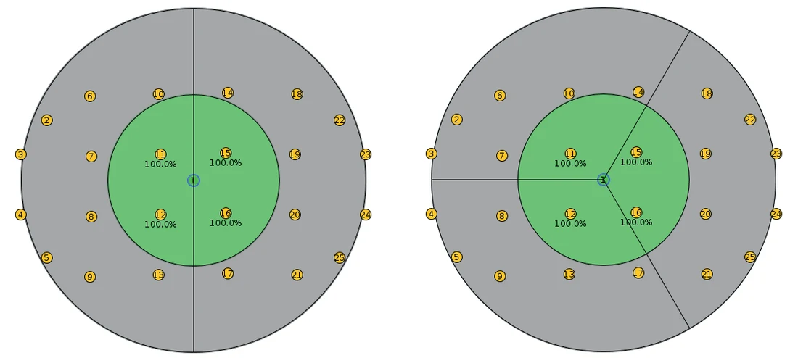
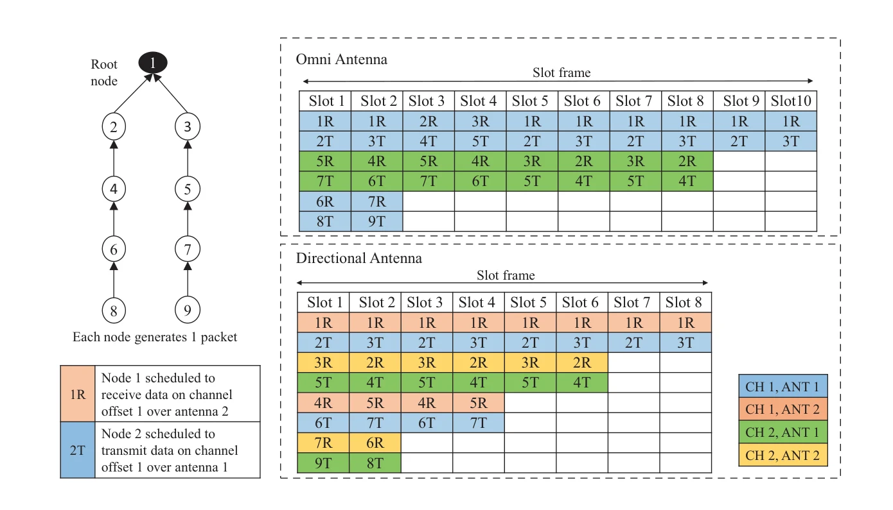
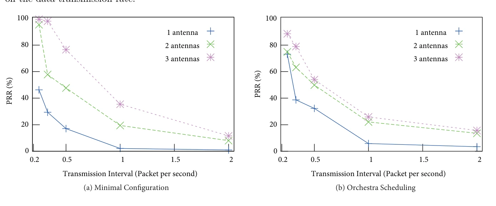
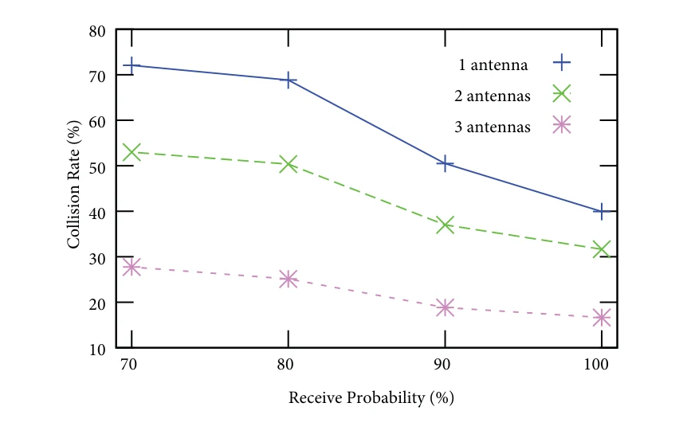
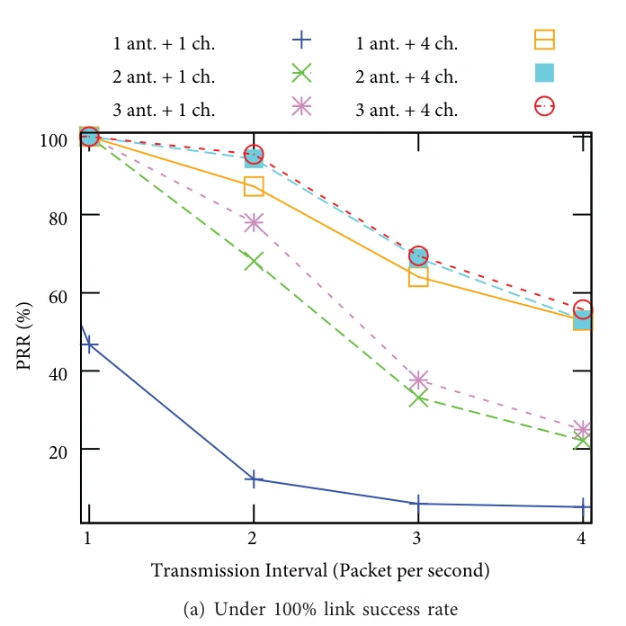

6TiSCH schedules radio resources in time and frequency. When few channels are free (Wi-Fi leaves only four 802.15.4 channels untouched), that is not enough. Switchable directional antennas add space as a third dimension.
Shared-slot PRR2–3×minimal configuration
SF-DA PRRup to +100%few channels, heavy traffic
Delay≈ −50%3 antennas vs omni
Energy≈ −60%25 nodes: 3.21 → 1.26 mWh
Antenna model
Cooja/Contiki extended with 2 or 3 switchable directional antennas per node.
SF-DA
A distributed scheduling function that allocates (slot, channel, antenna) triples.
Evaluation
Minimal, Orchestra and SF-DA with 1, 2 and 3 antennas on 25–73 node grids.
1 · Introduction
Why Add Space to 6TiSCH?
IoT nodes will share crowded spectrum with Wi-Fi, Bluetooth and dense 5G cells: more co- and adjacent-channel interference.
Omni-directional antennas limit spatial reuse: per-node throughput falls as Θ(1/√(n log n)) in random networks (Gupta–Kumar).
Directional antennas focus energy: longer range for the same power, fewer collisions, fewer retransmissions, longer lifetime.
Only channels 15, 20, 25 and 26 avoid Wi-Fi, so 6TiSCH frequency diversity is limited in practice.
Known pitfalls
Hidden terminals, deafness and synchronization make directional MACs hard, especially on RPL trees. 6TiSCH helps: its schedule is collision-free by design, and SF-DA records each neighbour's direction.
Contribution: a directional-antenna-aware resource scheduler for IETF 6TiSCH, with a switchable antenna model for Cooja, compared against existing 6TiSCH schedulers.
2 · Related Work
How Much Can Directional Antennas Help?
capacity gain ≈ 2π / √(α β)
Tx beam α
Rx beam β
Switched-beam prototypes
Electronically switched antennas in WSNs (Mottola et al.) beat omni-directional nodes.
RSSI-based selection
Pick the antenna with the best RSSI (Voigt et al.); reliable mainly with line of sight.
A slotframe (here 31 cells × 10 ms = 310 ms) repeats; each cell is a (time slot, channel offset) pair. Distant pairs may reuse a cell.
6top, between 6LoWPAN and the TSCH MAC, adds, deletes and relocates cells between neighbours (6P); the standard leaves the scheduling policy open.
Enhanced Beacons in hard slots carry slotframe size, slot duration, hopping pattern and the network-wide slot counter.
Longer slotframes save energy; shorter ones cut delay.
4 · System Model · Fig. 2
A Switchable Directional Antenna Model for Cooja

Emulated hardware
TI exp5438 (MSP430F5438 + CC2420) gets three radio interfaces on extra SPI ports; in reality one radio behind an RF switch.
Radio medium
Cooja's UDGM (transmit and interference ranges) now also checks the transmission direction from the node coordinates.
The arrival direction is passed up the stack and stored in the MAC neighbour table, so unicast frames leave over the antenna facing the receiver.
4 · Space Time Scheduling · Fig. 3
Omni vs Space Time Scheduling

Nine nodes, root 1, two channels, each node sends one packet. Omni antennas need a 10-slot schedule; with directional antennas, pairs facing away from each other share slots and the same packets arrive in 8 slots. Cells become (slot, channel, antenna) triples.
4 · Space Time Scheduling · Interactive
Scheduler Playground: Add Antennas, Add Channels
AntennasChannels
Simplified greedy scheduler on the Fig. 3 tree, not the paper's SF-DA: 40 m spacing, 100 m interference, half-duplex nodes; a receiver is disturbed only by a same-channel transmitter whose active antenna covers it and that its own listening antenna faces.
4 · Space Time Scheduling · Algorithms 1–2
SF-DA: Directional-Antenna-Aware Scheduling
Behaviour in each slot (Alg. 1)
Shared slot: listen on all antennas (learn neighbour directions) or send on all antennas.
Transmit slot: broadcast on all antennas; unicast on the antenna facing the destination.
Receive slot: listen only on the antenna facing the scheduled neighbour.
Cell statistics are kept per antenna, since each direction sees different interference.
Cell allocation (Alg. 2)
Pick a random slot the parent does not use, then a random channel not on the failed list.
Reject it if a 1-hop neighbour uses the same slot and channel and the antennas would face each other in opposite modes,
or the same mode with antennas that do not match.
Otherwise return (slot, channel, antenna).
EB frames carry the arrival angle; the paper assumes it can be estimated accurately.
5 · Results · Table 1, Figs. 4–5
Setup, and Antennas in Shared Slots

Minimal configuration and Orchestra only use shared cells. Sending on the right antenna already raises PRR 2–3× as traffic grows, although receivers still listen on all antennas.

Grid / area
25 nodes, 200 × 150 m
Antennas
2 × 180° or 3 × 120°
Tx / interference range
50 / 100 m
Timeslot / slotframe
15 ms / 15
Retransmissions / buffer
5 / 5
Test duration
2 h
5 · Results · Figs. 6–7
SF-DA: PRR, Delay and Energy

With more than 8 channels the antennas add little on this topology: space helps most when channels are scarce, traffic is heavy and links are poor. The 1-antenna case is the standard SF0 baseline.
5 · Results · Table 2
Scaling with Network Size
Metric1 antenna2 antennas3 antennas
Bigger networks mean longer paths: PRR falls, delay and energy rise. Three antennas add about 5–10 points of PRR, roughly halve the delay (1,267 → 536 ms at 25 nodes) and cut energy by about 60% (3.21 → 1.26 mWh).
6 · Conclusion
Conclusion and Future Work
A low-complexity switchable directional antenna lets 6TiSCH schedule in time, frequency and space.
Even schedulers unaware of antennas (minimal, Orchestra) gain from sending on the right antenna.
SF-DA brings up to 100% higher PRR under heavy traffic with few channels, about half the delay and much lower energy.
Gains are largest in dense, interference-limited networks; with many free channels they shrink.
Limits and next steps
Simulation with an idealized arrival-angle estimate and UDGM propagation
Real antenna hardware and realistic channel models
6 · Conclusion
Check Questions
Why does limited spectrum (four Wi-Fi-free channels) make space a valuable resource for 6TiSCH?
What is the capacity gain factor for three 120° antennas at both ends?
Why do minimal configuration and Orchestra improve only partly with directional antennas?
When does SF-DA reject a candidate cell?
Why do directional antennas also save energy?
Show answers
With few channels, distributed schedulers often pick the same channel offset; a third dimension lets those cells coexist without colliding.
2π / √(αβ) = 360° / 120° = 3.
They send on the right antenna but receivers still listen on all antennas in shared cells, so interference is only partly suppressed.
When a 1-hop neighbour uses the same slot and channel and the two antenna directions would conflict (facing each other in opposite modes, or mismatched in the same mode).
A narrower beam needs less transmit power for the same range (180° ≈ half of omni), and fewer collisions mean fewer retransmissions.
References
Selected References
P. Gupta, P. R. Kumar, "The capacity of wireless networks," IEEE Transactions on Information Theory, 46(2), pp. 388–404, 2000.
S. Duquennoy et al., "Orchestra: Robust mesh networks through autonomously scheduled TSCH," ACM SenSys, 2015.
X. Vilajosana, K. Pister, T. Watteyne, "Minimal IPv6 over the TSCH mode of IEEE 802.15.4e (6TiSCH) configuration," IETF RFC 8180, 2017.
T. Voigt, L. Mottola, K. Hewage, "Understanding link dynamics in wireless sensor networks with dynamically steerable directional antennas," EWSN, 2013.
P. Li, C. Zhang, Y. Fang, "The capacity of wireless ad hoc networks using directional antennas," IEEE Transactions on Mobile Computing, 10(10), pp. 1374–1387, 2011.
See the full article for the complete reference list. Figures are reproduced from the article (CC BY 4.0); some are cropped or split for interaction.
Thank You
Enabling Space Time Division Multiple Access in IETF 6TiSCH Protocol
How to cite: Görmüş, S., & Külcü, S. (2019). Enabling space time division multiple access in IETF 6TiSCH protocol. Turkish Journal of Electrical Engineering and Computer Sciences, 27(6), 4151–4166. doi:10.3906/elk-1903-127